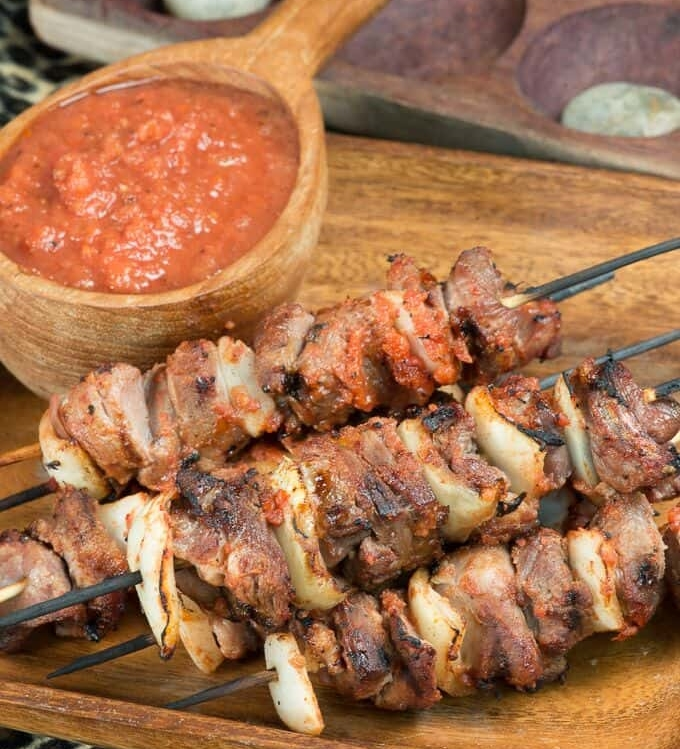

RWANDAN GOAT BROCHETTES

RWANDAN GOAT BROCHETTES ARE ANOTHER BELOVED STREET FOOD
These are simple to make if you can get your hands on some goat meat otherwise you can substitute beef, chicken or fish
It is considered amongst the Rwandan national dishes.The smell of these cooking over the fire is divine. No wonder they
are such a beloved street food, they are hard to resist.
Goat is the number one meat of choice, and they also make them with goat offal in which case they are called zingalo. Fair warning you can not eat only one brochette.
Ingredients
- 1 lb goat meat or beef cut into 1 inch cubes
- 1 onion quartered
- 5 fresh ripe plum tomatoes, crushed
- 1/2 small can of tomato puree
- 1/2 onion diced
- 1 bouillon cube Maggi
- 6 pili-pili chilies use any hot chili you like
- Vegetable oil
- Salt to taste
Steps to make Rwandan goat brochettes
- Soak the wooden skewers in water for about 20 minutes.
- Form the brochettes by alternately threading meat and 2 to 3 pieces of onion onto the skewer.
- Mix the crushed tomatoes, the diced onions and the pili-pili chilies (pounded to a paste) along with the tomato puree. This should create a medium thick sauce; add a little oil and water to attain the desired consistency.
- Reserve half of the sauce for dipping.
- Put half the sauce in a pan with the skewers and turn to coat, let marinade for 30 minutes.
- Then lay the skewer on the grill Brush the sauce on all sides of the brochettes, adding more of the sauce as you turn them. Turn them about 3 times. Allow it to cook for about 3 minutes. The brochettes are ready when just cooked through
(about 8-10 minutes) and should be a nice reddish color, due to the sauce.
- Serve with sweet potato fries and use the reserved sauce for dipping.
RETURN TO HOMEPAGE